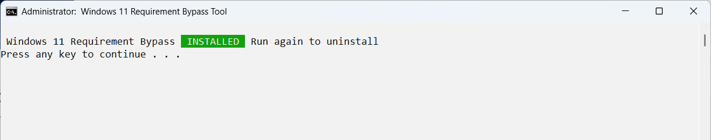
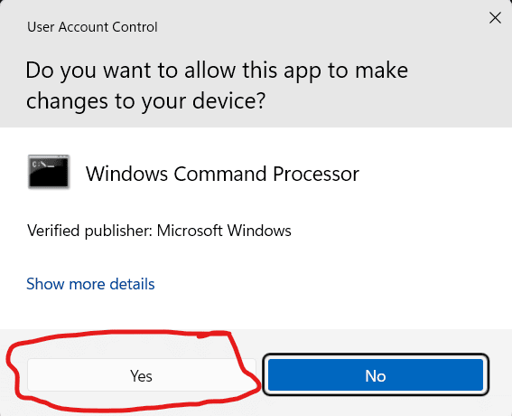
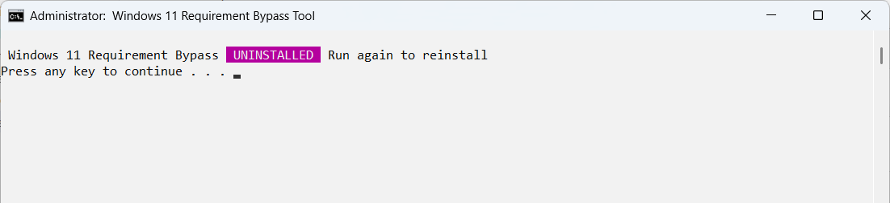

Download: Windows 11 Requirement Bypass Tool
What Does The Windows 11 Requirement Bypass Tool Do?
The Windows 11 Requirement Bypass Tool offers you a quick and easy way of bypassing the Windows 11 requirements when you are upgrading from an older version of Windows. The Windows 11 Requirement Bypass Tool does not allow you to upgrade an unsupported PC via Windows update but will allow to upgrade manually via an ISO disk.
Downloading The Windows 11 Requirement Bypass Tool
You can download the Requirement Bypass Tool using the download button below, this should start the download process.
windows11_requirement_bypass.cmdHow Do I Use The Requirement Bypass Tool?
The Windows 11 Requirement Bypass Tool is really easy to use, you just need to open the file, and it will automatically run.
You will be asked to enter your Admin password when you run the Windows 11 Requirement Bypass Tool, once you enter your password click yes. You might not need a password if you are using an Admin account to run the tool.
After you have launched the tool, you should see a message that reads "Windows 11 Requirement Bypass INSTALLED Run again to uninstall", this means that the bypass has been installed on your system and you are ready to upgrade to Windows 11 on your unsupported system.
If you see this screen that reads "Windows 11 Requirement Bypass UNINSTALLED Run again to reinstall", then the Bypass has been successfully removed from your system.
The Windows 11 Requirement Bypass Tool acts as an Uninstall/ Install toggle, this means that you uninstall/ reinstall the bypass just by running the tool, if you have run the tool to install the bypass you can run it again to uninstall it.
Page Updated: 22/09/2024
Page Author: Hackboto